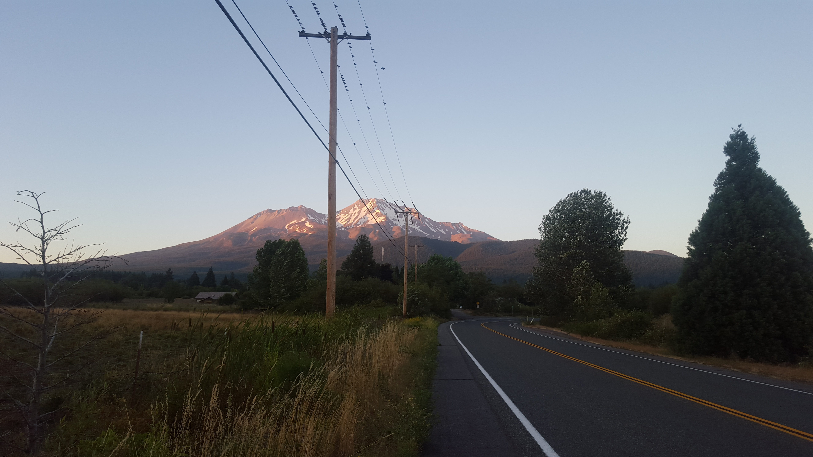

August 2016
A new chapter. A new home. A new…

.. Everything to say the least. Welcome to Seattle!!!!
After being on the road for the last 2 years, settling down, for at least a year, is pretty mind boggling for me. As excited as I am to have a room again, a space that is solely mine, there’s still a big part of me that longs and misses the freedom of a backpack and the magic that comes along with the world being “my room.” It’s a beautiful gift to be able to choose to spend each and every day and moment as you want, when you want. I feel blessed to have been able to experience this way of life and I learned more about myself and my life goals, career desires, needs, and passions than I ever knew before. My toolbox of skills has been built upn and it couldn't be coming to this next chapter of my life at a more optimal time. I'm still adjusting to the routine of a 9-5 again, but luckily, that routine I’m talking about is, well, something that’s pretty amazing in its-self and 100 times over worth it. That routine, that 9-5, that 100 times over worth it is Ada. And wow, I couldn’t feel any more blessed or appreciative for the environment, experience and opportunity I’m in.
Let me back a for a minute. I’m a member of cohort[6] at Ada Developer’s Academy. This program is pretty out of this world. On a top level, it’s a non-profit year long program for women, trans, non-binary folk. During this year we have school followed by an internship and then graduation. Now, on a deeper level, this program is about catalyzing change in the tech industry by providing a specific group of people that face discrimination in this industry a safe space to learn and develop skills, a supportive network, experience and a well-rounded and wholistic view of the current state of this industry in regards to inclusion and diversity so that in the future we can be change makers in companies. So, we can be catalysts to expand their definition of what it means to be more inclusive of different underrepresented demographics. How did I find a tech coding program that was so human centered? Only, the world knows, but I do know that not a day goes by that I don't put everything that I have into this program and what I'm learning because I am extremely grateful, honored and excited for this new path I'm on and this new network I am now a part of.